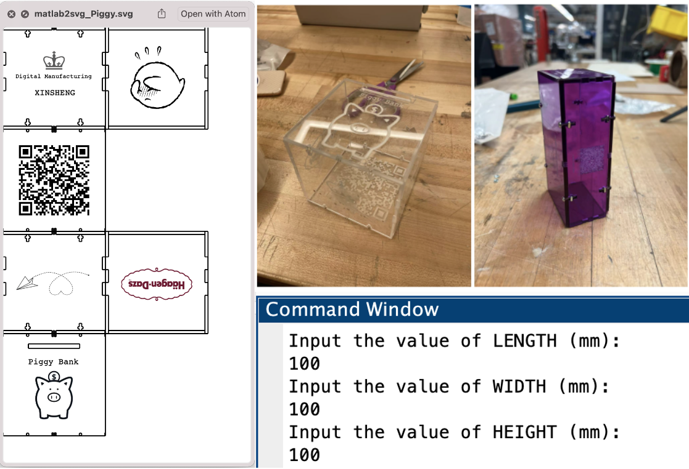
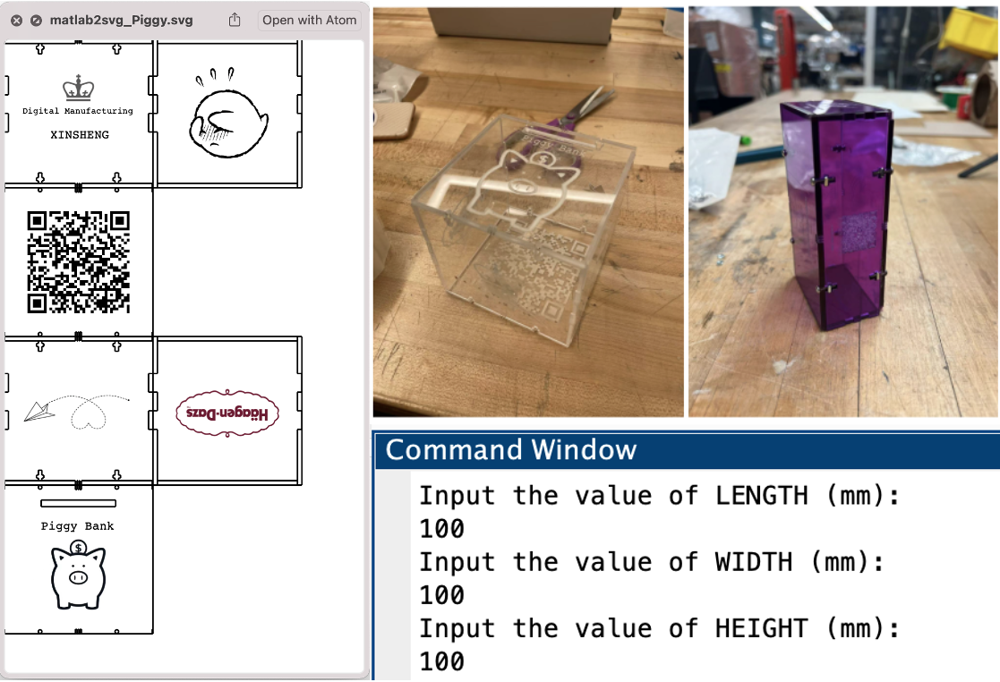

Xinsheng Gu
This is Xinsheng Gu's online portfolio!

CV Linkedin GitHub E-mail: xg2381@columbia.edu
About Me
MS in Mechanical Engineering at Columbia University | Concentration in Robotics and Control | Fudan University Alumnus
Selected Project
Travelling Sales Problem solving with Genetic Algorithm (Oct 2021)
Course: Evolutionary Algorithm & Design Automation

Description:
I wrote a genetic algorithm to approximately solve the Euclidian Traveling salesman Problem. The program aims at finding the shortest closed path that goes through all points exactly once, and returns to the starting point. I attempted to use a variety of representation, variation operators, selection mechanism in order to reach a better performance, which can be shown on the learning curve compared with other algorithms.
Genetic Programming (Nov 2021)
Course: Evolutionary Algorithm & Design Automation

Description:
This project used genetic programming to perform symbolic regression. The goal is to find the symbolic algebraic expression of the form y=f(x) best fits a set of 1000 (x,y) pairs. Assume only algebraic operators (+, –, *, /), sine and cosine, and as terminals assume real constants (in the range ±10) and the variable x. I represented a symbolic expression consisting of all the variables and operaters above in a specified structure, which is also known as a binary tree. Then I improved the symbolic expression by minimazing MAE with the target expression to obtain the best fitness and symbolic expression using GA after 50000 times of evaluations, along with adjusting the parameters to reach the best effect.
Evolving Morphology Soft Robots (Dec 2021)
Course: Evolutionary Algorithm & Design Automation
Description:
This project aims at experiencing and practing the application of evolutionary computation to a real world open-ended problem. I created a physics simulator for bouncing and breathing cube robots and animated the motion of robots with open3D. Then I introduced genetic algorithm to evolve an arbitrarily-shaped robot with my own representation, parameters, and metrics. In the end, I evolved the fastest robot that I could.
Library Assisting Robot (Dec 2021)
Course: Introduction to Robotics

Description: Designed a wheelchair-attachable robotic arm to assist the disability to grasp books away from reachable area in libraries, built the robot model and conducted force analysis with SOLIDWORKS
Obtained the solution to forward kinematics and inverse kinematics founded on Denavit-Hartenberg coordinate system, and verified the solution with dynamic simulation using MATLAB toolbox
Concluded the work in the final paper using IEEE format and made a presentation
Laser Cutting Box (Feb 2022)
Course: Digital Manufacturing
 

Description: This is a software-driven fabrication project. I wrote a program that would generate parts for making an acrylic box. The input parameters to the program specify the outside dimensions of the box, material thickness, and any other relevant parameters of a desired. Then my software could generate an SVG file, which could then be imported into the laser-cutter software and used to cut provided acrylic sheets, which should then be bolted into a box.
Data Analysis: the Effect of Birth Order on Personality (Dec 2021)
Course: Data Science for Mechanical Engineering

Description: Explored interesting topic of dataset from UCI Machine Learning Repository, Kaggle, and Google Dataset
Carried out multiple methodology including EDA, linear regression, PCA, and K-means to study the dataset with Python as programming language
Drew a conclusion from visualized dataset plots and statistical analysis
Inverse Bending Problem of Magneto-active Soft Beam Based on Genetic Algorithm (Jun 2021)
Undergraduate Thesis
Description:
My thesis provided a numerical approach to predict residual magnetic flux density with a given curve shape of a magneto-active soft beam by applying Genetic Algorithm as the optimization stratgy. The basic examples of inverse bending problems of magnetic beams are solved in continuous domain, discrete domain and mixed integer domain respectively. This thesis also designed application scenarios by solving the inverse problem. It not only provides an effective tool for the efficient design and optimization of magneto-active soft materials and magnetic fields, but also widens the application potential of magneto-active soft materials.
Interaction Design: Interstellar (May 2020)
Course: Creative Coding

Description: Wrote a plot about space travelling and ways of interaction with mouse and keyboard
Simulated motions and mutual forces between 10+ objects in two-dimensional space by JavaScript programming
Accomplished a game named Interstellar
Skills
- Technical Skills: MATLAB & Simulink; Python; SSH; AutoCAD; SOLIDWORKS; ANSYS; JavaScript; HTML5/CSS; Google Cloud Platform
- Languages: Chinese (native); English (proficient); Japanese (intermediate)